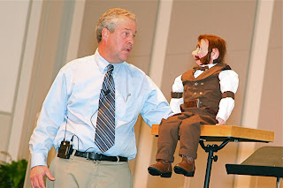
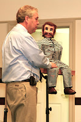

The Outlaw Abe Buzzard
11/6/2011
 |
| I am not pleased at Abe's denial of lifting the ventriloquail assistant's wallet on the way out to the stage. |
{kind=link}
By Del Burkholder
 |
| Abe in his prison uniform |
{kind=link}
Years ago an old professor friend asked my assistance with tracking his genealogy. During this I kept finding reference to the outlaw Buzzard family; this began my study of the once famous Pennsylvania outlaw Abe Buzzard - the leading figure of five of his brothers and 10 to 15 other dangerous outlaws who operated as horse and chicken thieves in the late 1800’s. History has largely forgotten this outlaw but it is said that in the east at his time only the president received more newspaper coverage than he did. There was more reward posted for Abe than was ever posted for Jesse James. Abe spent 45 of his 80 some odd years behind bars with most of those years at the historical Eastern Penn. He was saved in prison, then got out and held bogus revival meetings. When the people came out to hear his teary sermons of “Ruin and Reformation” the Buzzard Gang would be robbing the homes of attendees of the revival.
Starting ventriloquism in an already established ministry with a decent number of people in every service was a concern, so I decided I needed niche characters where I could tell interesting stories until my vent skills caught up. I asked Clinton if he could create this character from an old 1880s picture of Abe. My idea was instead of writing vent scripts I just needed to portray Abe through me; his script is actual historical fact. I planned to use Abe only in churches and other venues and not in prison with our prison ministry (Streams of Life). It was Mr. D who suggested I should use my characters inside prison also. I was concerned that ventriloquism would not be accepted by the inmates who are very serious about their church and who see me as a fire and brimstone evangelist. Mr. D talked of Al Lacy, an evangelist he knew, who was very successful with his vent figure Clyde Hyde and drew a very good balance between the serious and the absurd. This encouraged me greatly that it could possibly work. Abe has quickly become a favorite in prison. His background of 45 years in prison (and my last 10 years experience in many different prisons) allows him to talk the lingo in his boastful, but loveable manner.
I have seen tears in the eyes of harden convicts when Abe tells how in the 1880s his wife Julia brought his newly born twin daughters to see him in prison and how he hung on the bars and wept. Today’s hardened convicts can relate to being separated from their own families. Shortly after tearing up, they are roaring in laughter from one of Abe’s demonstrative raves. When you can make people laugh and cry in the same talk, I have been told you are truly communicating to the heart.